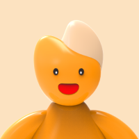

AI 면접 진행 과정
- 1면접환경 체크
- 2지원직무 선택
- 3자기소개서 선택선택 사항
- 4면접 진행
- 5면접결과 확인

안녕하세요!
DeepInterview AI 면접은
아래의 내용으로 이루어져 있어요.
살펴보신 후, 이상이 없다면
AI 면접 응시하기 버튼을 눌러주세요.
지원직무 선택
지원직무를 선택할 수 있어요.
맞춤형 면접
내 자기소개서를 기반으로 한
맞춤 면접을 받을 수 있어요.자기소개서 연동
DeepResume 자소서 등록을 통해
보다 질 높은 면접을 진행할 수 있어요.
면접 진행 전 확인
- 자기소개서를 등록하면 해당 내용을 바탕으로 면접을 진행할 수 있어요. 등록은 선택 사항이에요.
- 등록한 자소서가 있다면 ‘DeepResume에 작성된 자소서 선택’을 눌러주세요.
- 자기소개서 없이도 경험을 직접 입력하거나 기업별 기출 면접문항을 선택해 진행할 수 있어요.
최근 응시내역
응시 결과가 없습니다.